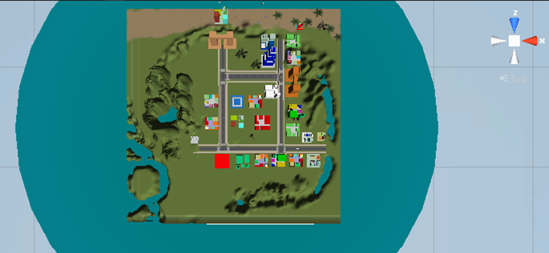

Unity
Unity es un motor de videojuego multiplataforma creado por Unity Technologies. Unity está disponible como plataforma de desarrollo para Microsoft Windows, OS X y Linux. La plataforma de desarrollo tiene soporte de compilación con diferentes tipos de plataforma.
Unity puede usarse junto con 3ds Max, Maya, Softimage, Blender, Modo, ZBrush, Cinema 4D, Cheetah3D, Adobe Photoshop, Adobe Fireworks y Allegorithmic Substance. Los cambios realizados a los objetos creados con estos productos se actualizan automáticamente en todas las instancias de ese objeto durante todo el proyecto sin necesidad de volver a importar manualmente.
El trabajo final consiste en crear un minijuego donde el jugador recorre una ciudad recogiendo diversos items (monedas, diamantes, etc).
El trabajo final consiste en crear un minijuego donde el jugador recorre una ciudad recogiendo diversos items (monedas, diamantes, etc).
caracteristicas
- La ciudad debe estar compuesta por diversos elementos:
- Al menos 3 edificios diferentes creados en su proyecto de Blender
- Al menos 3 elementos diferentes del asset store de Unity
- 2.La ciudad deberá tener:
- cielo
- océano
- islas
- playa/arena
- bosques
- montañas
- La ciudad tiene bosques/montañas
- El jugador no se cae al llegar a un extremo de la ciudad
- Los items desaparecen cuando los toca el jugador
- Los items tienen alguna animación
Conclusión
El proyecto de unity es uno de mis favoritos ya que en el utilizamos algo de programacion, diseno y mucha creatividad al realizar nuestro juego y a aprender a combinar lo que havia sido nuestro proyecto anterior que fue de Blender con uno nuevo
